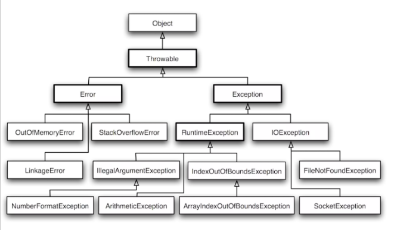

如何善用Java异常
点击上方“Java知音”，选择“置顶公众号”
技术文章第一时间送达！
作者：xy的技术圈
juejin.im/post/5bacd8975188255c69780e7b
Java的异常算是Java语言的一个特色了。也是在日常编码中会经常使用到的东西。但你真的了解异常吗？
这里有一些关于异常的经典面试题：
Java与异常相关的类结构和主要继承关系是怎样的？
Java7在关于异常的语法上做了什么改进？
什么是运行时异常和声明式异常？它们有什么区别？
什么是“异常丢失（异常覆盖）”问题？
什么是异常链？
什么是返回值覆盖？
编写异常时的一些最佳实践？
如果以上问题的答案你都能了然与胸，那么恭喜你，已经很熟悉Java异常这一块了。
如果一些问题还弄不清楚？没关系，看完这篇文章就可以了。
异常的层次结构
先上图

抛开下面那些异常不谈，我们的关注点可能主要在四个类上：
Throwable
Error
Exception
RuntimeException
其中，因为Error代表“错误”，多为比较严重的错误。如果你了解JVM，应该对OutOfMemoryError和StackOverflowError这两个类比较熟悉。
一般我们在写代码时，可能用的比较多的是Exception类和RuntimeException类。
那到底是继承Exception类好还是继承RuntimeException类好呢？后面我们在“编写异常的最佳实践”小节会讲到。
Java7与异常
Java7对异常做了两个改进。第一个是try-with-resources，第二个是catch多个异常。
try-with-resources
所谓的try-with-resources，是个语法糖。实际上就是自动调用资源的close()函数。和Python里的with语句差不多。
不使用try-with-resources，我们在使用io等资源对象时，通常是这样写的：
String getReadLine() throws IOException {
BufferedReader br = new BufferedReader(fileReader);
try {
return br.readLine();
} finally {
if (br != null) br.close();
}
}
使用try-with-recources的写法：
String getReadLine() throws IOException {
try (BufferedReader br = new BufferedReader(fileReader)) {
return br.readLine();
}
}
显然，编绎器自动在try-with-resources后面增加了判断对象是否为null，如果不为null，则调用close()函数的的字节码。
只有实现了java.lang.AutoCloseable接口，或者java.io.Closable（实际上继随自java.lang.AutoCloseable）接口的对象，才会自动调用其close()函数。
有点不同的是java.io.Closable要求一实现者保证close函数可以被重复调用。而AutoCloseable的close()函数则不要求是幂等的。具体可以参考Javadoc。
但是，需要注意的是try-with-resources会出现异常覆盖的问题，也就是说catch块抛出的异常可能会被调用close()方法时抛出的异常覆盖掉。我们会在下面的小节讲到异常覆盖。
多异常捕捉
直接上代码：
public static void main(String[] args) {
try {
int a = Integer.parseInt(args[0]);
int b = Integer.parseInt(args[1]);
int c = a / b;
System.out.println("result is：" + c);
} catch (IndexOutOfBoundsException | NumberFormatException | ArithmeticException ie) {
System.out.println("发生了以上三个异常之一。");
ie.getMessage();
// 捕捉多异常时，异常变量默认有final修饰，
// 所以下面代码有错：
// ie = new ArithmeticException("test");
}
}
Suppressed
如果catch块和finally块都抛出了异常怎么办？请看下下小节分析。
运行时异常和声明式异常
所谓运行时异常指的是RuntimeException，你不用去显式的捕捉一个运行时异常，也不用在方法上声明。
反之，如果你的异常只是一个Exception，它就需要显式去捕捉。
示例代码：
void test() {
hasRuntimeException();
try {
hasException();
} catch (Exception e) {
e.printStackTrace();
}
}
void hasException() throws Exception {
throw new Exception("exception");
}
void hasRuntimeException() {
throw new RuntimeException("runtime");
}
虽然从异常的结构图我们可以看到，RuntimeException继承自Exception。但Java会“特殊对待”运行时异常。所以如果你的程序里面需要这类异常时，可以继承RuntimeException。
而且如果不是明确要求要把异常交给上层去捕获处理的话，我们建议是优先使用运行时异常，因为它会让你的代码更加简洁。
什么是异常覆盖
正如我们前面提到的，在finally块调用资源的close()方法时，是有可能抛出异常的。与此同时我们可能在catch块抛出了另一个异常。那么catch块抛出的异常就会被finally块的异常“吃掉”。
看看这段代码，调用test()方法会输出什么？
void test() {
try {
overrideException();
} catch (Exception e) {
System.out.println(e.getMessage());
}
}
void overrideException() throws Exception {
try {
throw new Exception("A");
} catch (Exception e) {
throw new Exception("B");
} finally {
throw new Exception("C");
}
}
会输出C。可以看到，在catch块的B被吃掉了。
JDK提供了Suppressed的两个方法来解决这个问题：
// 调用test会输出：
// C
// A
void test() {
try {
overrideException();
} catch (Exception e) {
System.out.println(e.getMessage());
Arrays.stream(e.getSuppressed())
.map(Throwable::getMessage)
.forEach(System.out::println);
}
}
void overrideException() throws Exception {
Exception catchException = null;
try {
throw new Exception("A");
} catch (Exception e) {
catchException = e;
} finally {
Exception exception = new Exception("C");
exception.addSuppressed(catchException);
throw exception;
}
}
异常链
你可以在抛出一个新异常的时候，使用initCause方法，指出这个异常是由哪个异常导致的，最终形成一条异常链。
返回值覆盖
跟之前的“异常覆盖”问题类似，finally块会覆盖掉try和catch块的返回值。
所以最佳实践是不要在finaly块使用return!!!
最佳实践？
如果可以，尽量使用RuntimeException
尽量不要在finally块抛出异常或者返回值
尽量使用Java7对异常的新语法
try-catch块可以单独抽到一个方法里面去，让你的代码更简洁 —— 参考《代码整洁之道》第7章
记录异常日志可以结合log和printStackTrace
参考文章
https://blog.csdn.net/hengyunabc/article/details/18459463
https://blog.csdn.net/chengqiuming/article/details/70139190
www.cnblogs.com/langtianya/p/5139465.html
《代码整洁之道》
推荐阅读(点击即可跳转阅读)
2. 面试题内容聚合
3. 设计模式内容聚合
4. Mybatis内容聚合
5. 多线程内容聚合
觉得不错？欢迎转发分享给更多人

我知道你 “在看”